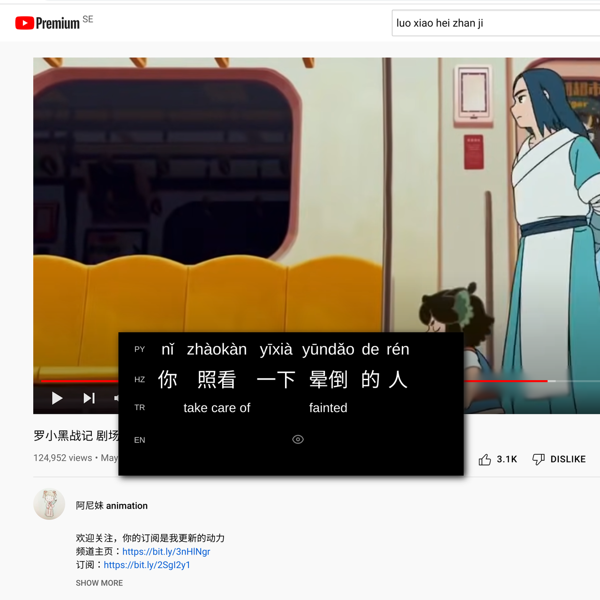

zimu.ai User Guide
Introduction
zimu.ai provides a browser extension for Chrome that provides interactive and adapative subtitles for select Chinese TV-shows and movies on Youtube. It is currently only available for the Chrome browser.
Download and Install in Chrome
For the time being the extension has to be installed manually and not through the Chrome store, this is due to updates sometimes take weeks to be approved, greatly slowing down the speed of improvement.
To manually install the extension, first download the latest version of here. Extract the files into its own folder, for example "browser_extension".
Open Chrome, click the small puzzle icon to the right of the address bar, then "Manage extensions".
Switch on Developer mode.
Click "Load unpacked", navigate to the extracted folder and confirm.
To make the extension more accessible, click the puzzle icon again and pin the extension.
Extension Usage Basics
After having installed the extension, navigate to browse.zimu.ai and pick a show or movie to watch. After loading the video page, you should see the zimu.ai subtitle window on top of the Youtube page.

The philosphy of this tool is that subtitles are there to help you understand the content, but as we're trying to learn Chinese here, we want it to help us as little as possible while still accomplishing that goal. When you first use the extension, you'll see that there are three rows, pinyin, hanzi and word translations, and under those is the full sentence translation. At first, all the information is available, except the full sentence translation. To hide a piece of information you can click on it to open the context menu and select the "hide" action. It will then be hidden the next time you encounter it, sort of like a natural flashcard.
If you're not a complete beginner however, it would get tedious to hide all the stuff you already know. In that case you can go to the options, then the "Knowledge" tab and select which HSK levels to automatically hide for each type.
Dictionary
If the word translation is wrong or you need more context, you can reach the dictionary entry for the word from the context menu, and then clicking the dictionary button.
Other tips and tricks
There are useful options that can be changed including keyboard shortcuts, the blurring (or not) of the hard-coded captions, switching between simplified and traditional characters and more. Adjusting font size can be done with the plus and minus buttons on the top subtitle menu.
When deciding which new words to focus on it can come in handy to see how often they occur in the video. If you hover over a word, the number of occurrences are shown in a small badge.
Depending on your level and the speed/difficulty of the content, you can set the "auto pause" option in the "Subtitle" option tab. This will pause at the completion of each subtitle. You then press play (space) to resume after each subtitle.
Starring content + exporting to Anki
While there are plans to integrate flashcards and SRS (Spaced Repetition System), for now there is the ability to export starred content to Anki, which is a free and open-source flashcards app.
In order to export, you first "star" a word or a full sentence translation by opening the context menu and clicking the star icon. Starred content can be seen in the Dashboard, which can be reached from the popup menu when you click the extension's button to the right of the address bar.
In the Dashboard, select the words in the table you'd like to export and click the "Export to Anki" button.
When clicking export, there are three tabs for different kinds of Anki exports. The first tab is for "Basic", then "Cloze" notes and lastly in the "Advanced" tab. All three uses fields separated by semi-colon rather than comma, make sure to change this when importing.
For the advanced export, the complete data of the interaction can be exported in JSON format, including all the separate pinyin, hanzi, word translations and more. With this you can build more advanced cards. The fields on these notes includes:
- search: the combination of hanzi, pinyin and word translation, for easier searching of notes (since the rest of the data is in the JSON field)
- data: the JSON containing all the relevant data 3-9: "boolean" fields (1 or empty) indicating whether a specific card should be generated.
If you use the card templates provided below, then the 3-9 fields are: